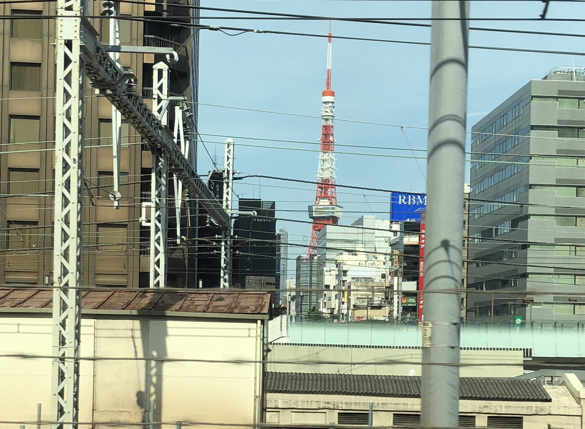
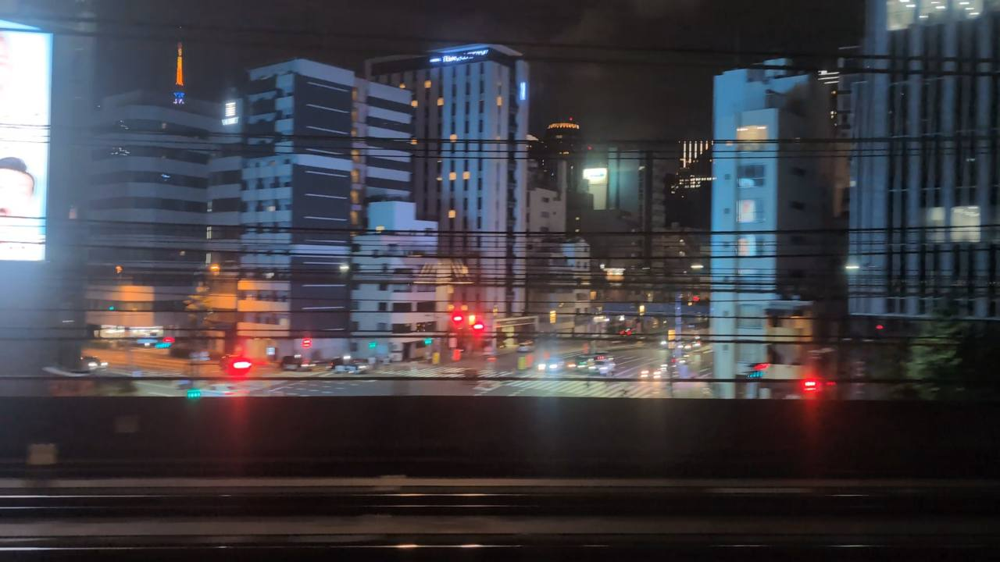
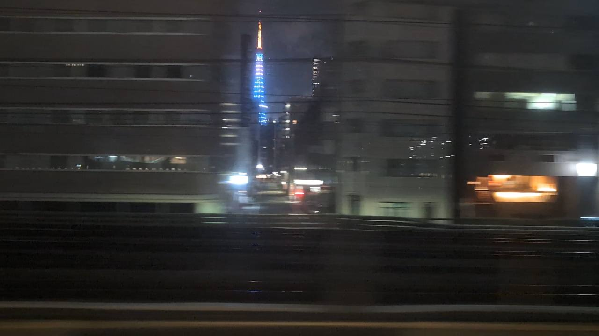

TOKAIDO SHINKANSEN WINDOW VIEW
東京タワーは新幹線から見える？
東京の空に、赤い塔。

- 見える区間
- 東京 → 品川
- 座席側
- E席・山側
- タイミング
- 東京発のぞみ基準で約3分後
- 写真
- 3 枚
東京タワーの見つけ方
東京駅を出て品川へ向かう数分のあいだ、E席側のビルの間に東京タワーが見えることがあります。旅の序盤、都市の景色の中に赤い塔がちらりと立つ。見えたら、東海道新幹線の車窓が始まった合図です。
東京から新大阪方面へ向かう場合は、東京 → 品川が近づいたらE席・山側の窓を少し早めに見てください。新大阪から東京方面へ向かう場合は、通過順が逆になります。
東海道新幹線の車窓としてのポイント
東京タワーは、富士山だけではない東海道新幹線の車窓を楽しむための見どころです。列車の速度が速いため、見える時間は短く、天気や座席位置によって見え方が変わります。
写真で見る東京タワー

